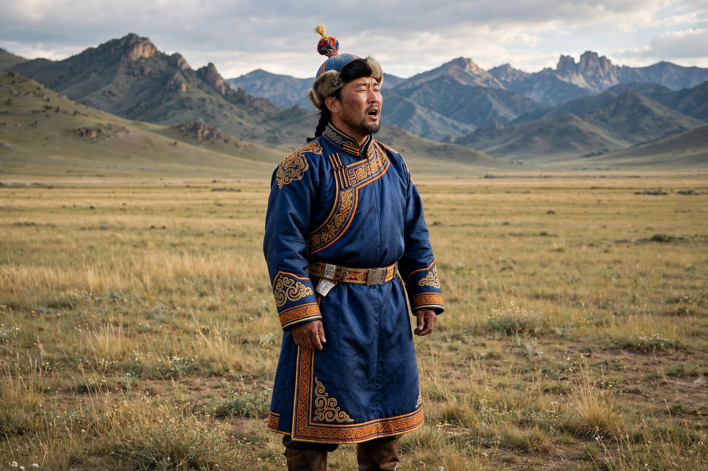

| Mongolian throat singing | |
| Native name | Khöömei (Mongolian: хөөмий) |
|---|---|
| Region | Mongolia, Inner Mongolia, Tuva, Altai (Central Asia) |
| Technique | Overtone singing: one voice produces a drone plus a flute-like melody of harmonics |
| UNESCO | Mongolian traditional art of Khöömei inscribed 2009, Intangible Cultural Heritage |

Mongolian throat singing, known in Mongolian as khöömei (хөөмий, "pharynx"), is a form of overtone singing in which a single vocalist produces two — sometimes three — distinct pitches simultaneously: a sustained low drone and a high, flute-like melody formed from selected harmonics of that drone. In 2009 UNESCO inscribed the Mongolian traditional art of khöömei on its Representative List of the Intangible Cultural Heritage of Humanity.
The singer manipulates the vocal tract — tongue position, lips, jaw and throat tension — to amplify individual overtones of a fundamental note produced with a constricted, pressurised voice. Recognised styles include kharkhiraa, a deep "undertone" style in which a subharmonic an octave below the fundamental is added, and isgeree khöömei, "whistling khöömei". Related traditions are practised in Tuva, where throat singing (also called khöömei) is a national symbol, and among Khakas and Altai peoples of Siberia.
Khöömei is traditionally associated with the sounds of the steppe: wind, water and animals. Legend links its origin to herders imitating the cries of a mother camel or the sounds of rivers and mountains — a pastoral art meant to harmonise humans with nature. Performers commonly accompany themselves on the morin khuur (horsehead fiddle) or the tovshuur lute. Songs often praise mountains, rivers, horses and heroes, and historically only men performed the art, though women singers are now prominent.
Internationally, khöömei has reached global audiences through Tuvan groups such as Huun-Huur-Tu and Mongolian folk-rock bands such as The Hu, which combine throat singing with heavy metal, and through viral performers like Batzorig Vaanchig.